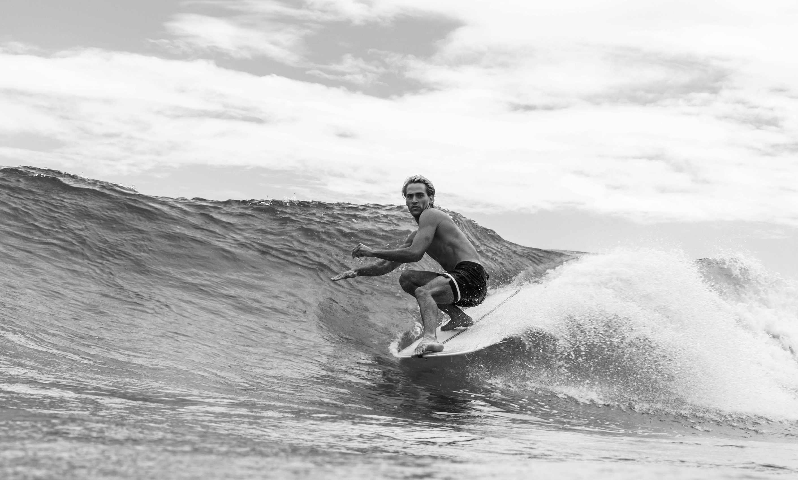
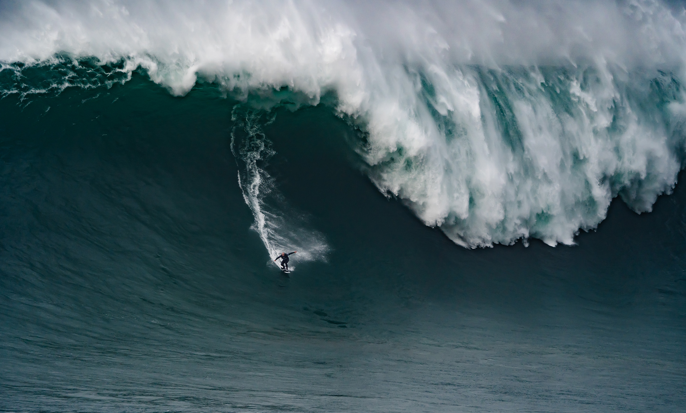
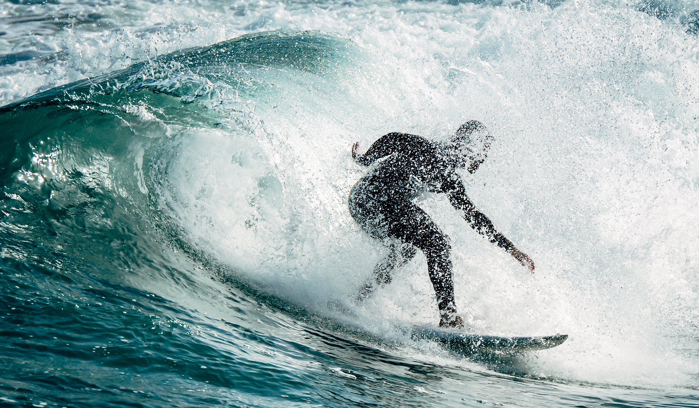
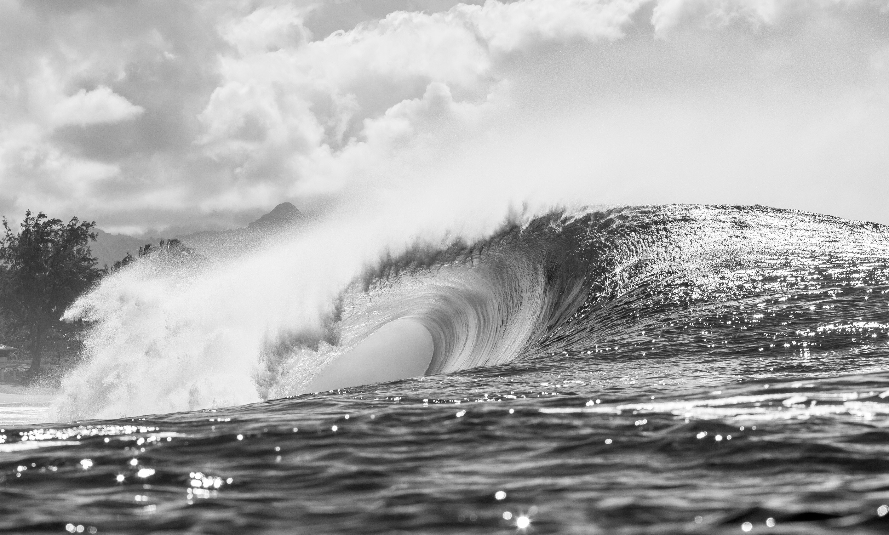
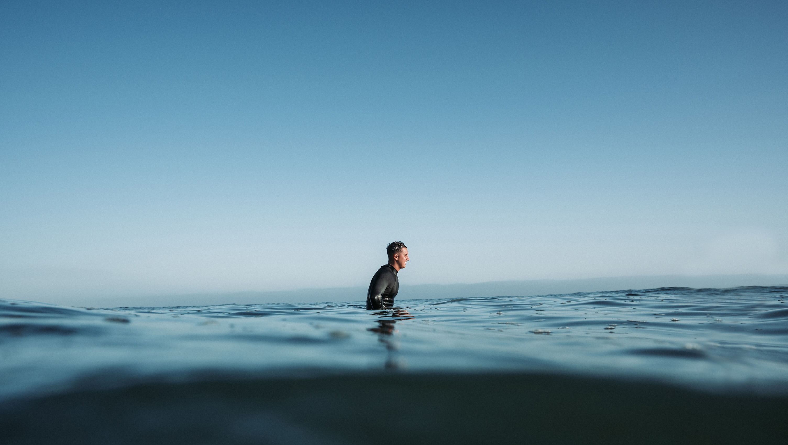
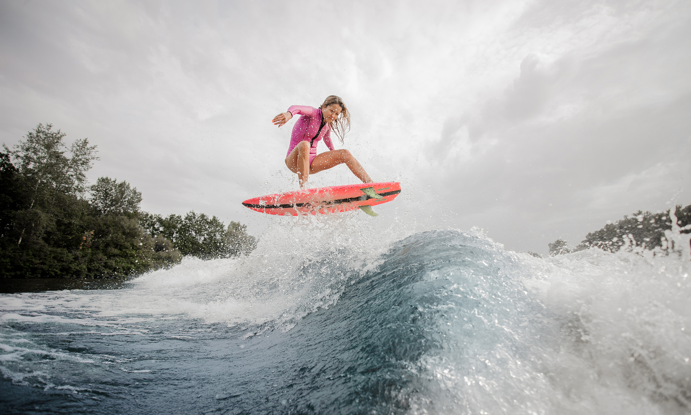
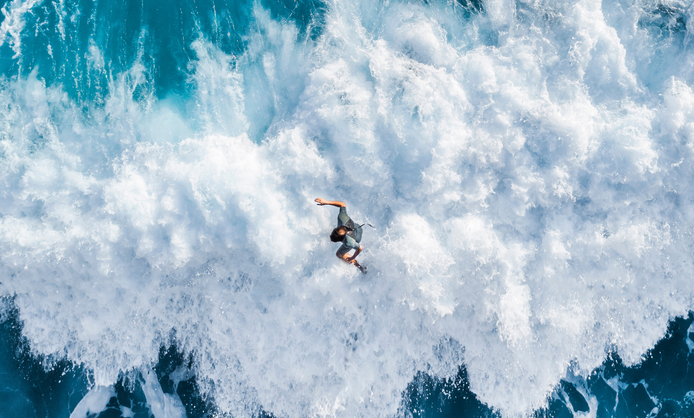
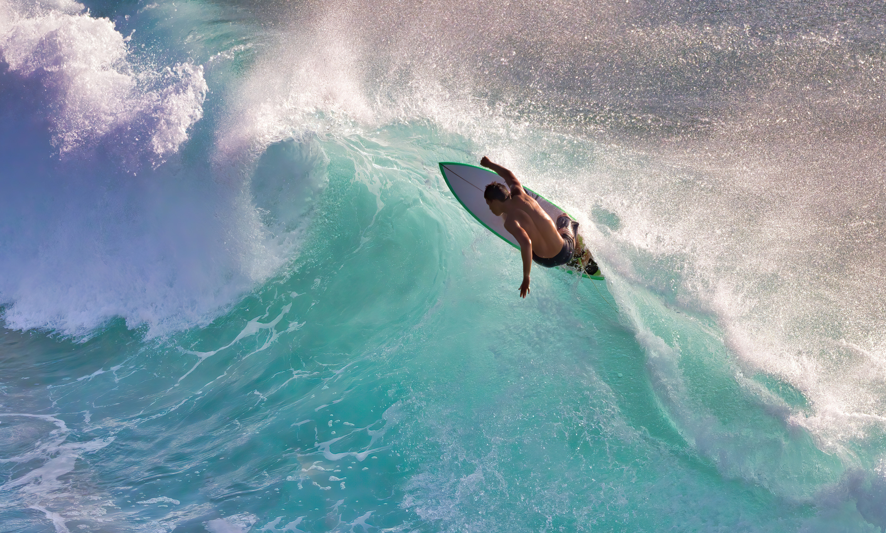

Ride the wave through lenses that never miss the moment.

Eyes locked, perfectly balanced on the wave.

One rider against a mountain of water.

Powering through the heart of the wave.

A clean barrel forms near shore.

Floating still, waiting for the next set.

Launching skyward with fearless energy.

Carving through the whitewater from above.

Alone with the swell.